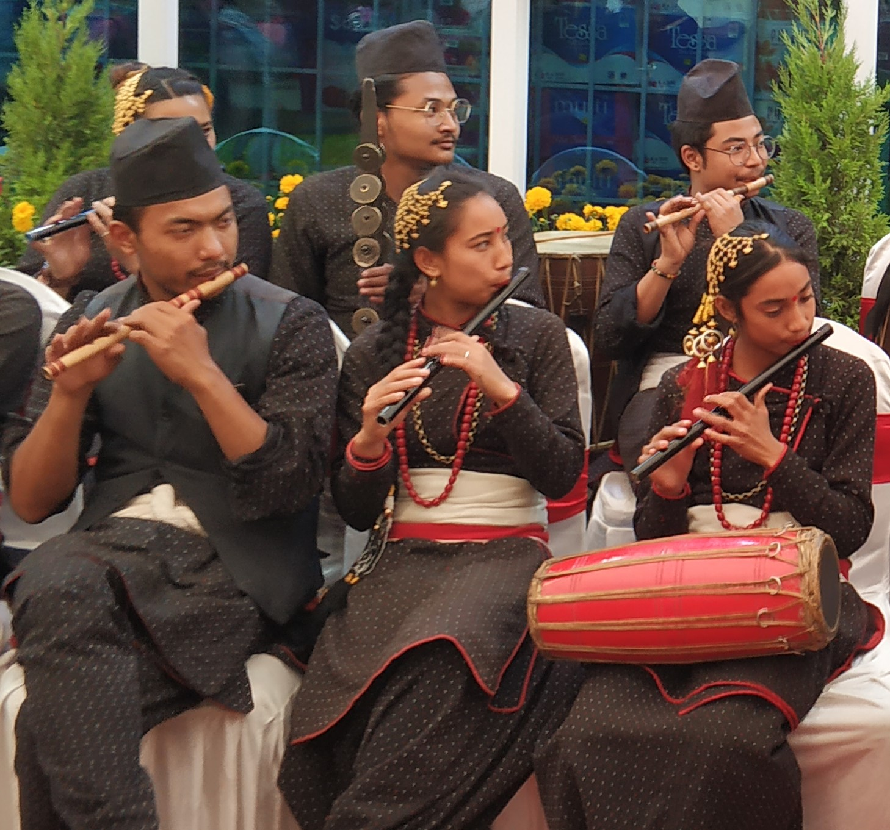
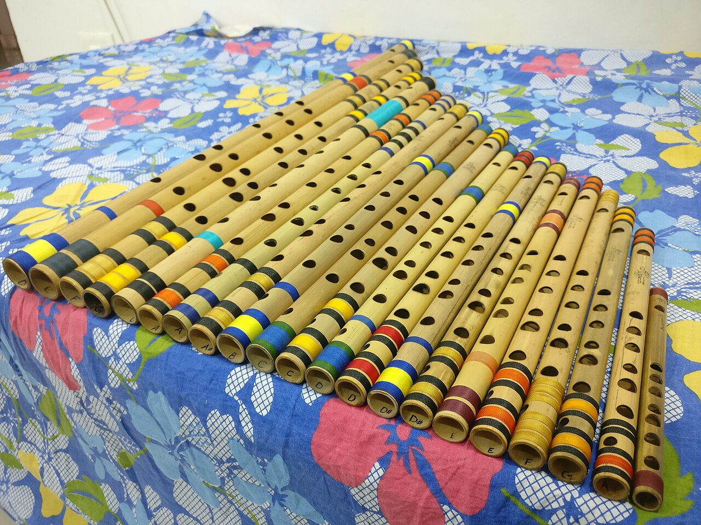
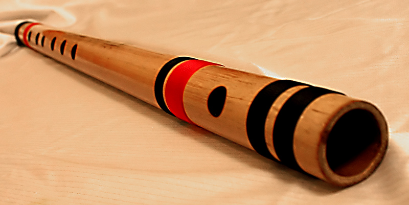

Choose a flute
Before classical ragas: get a beginner-friendly bamboo flute you can cover with your fingers and that responds to soft air.

.jpg){kind=link}
Size and key

{kind=link}
Smaller / higher flutes need less air and shorter stretch — good for small hands. Middle C is the usual adult starter. Long bass flutes are hard for day-one embouchure.
The stamped key (C, G, A…) is a Western pitch label. On many shop mediums (e.g. C Natural), it is the pitch of three-hole Sa; all-closed soft air is then a fifth below (lower Pa). For Indian practice, match the practice-bar drone to your three-hole Sa.
Making your own? Use the flute layout calculator for tube length, bore, hole marks, and diameters.
Six vs seven vs eight holes

{kind=link}
Folk and starter bansuris often have six finger holes. Concert Eastern bansuris often add a seventh (offset pancham). Either works for first sound. South Indian venu (Carnatic) usually has eight finger holes and a different Sa map — see Carnatic venu. This room’s default path is the side-blown bansuri / basuri family used across North India and Nepal.
What to buy
- Bamboo with a clean blowing-hole edge — not cracked.
- Holes you can seal with finger pads.
- Prefer a true side-blown basuri (open hole on the side) for this room’s path. An end-blown murali (blow into the tip like a recorder) is easier for a first noise but uses a different embouchure.
- Budget is fine for month one — practice matters more than upgrading early.
Care
Wipe condensation after practice. Store dry. Oil bamboo if your maker recommends it.